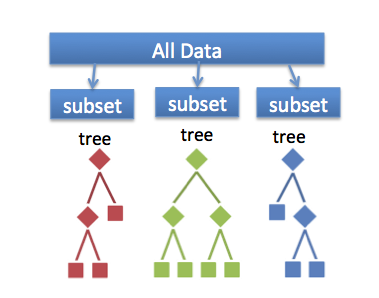

Analyze_Model : Random Forest

랜덤포레스트의 경우 다양성을 극대화 하여 예측력이 상당히 우수한 편이고
배깅과 동일하게 붓트스트랩 표본을 이용한 다수의 트리의 예측 결과를 종합하여
의사결정을 진행하기 때문에 안정성도 상당히 높다는 장점이 있습니다.
하지만 랜덤포레스트 역시 다수의 트리를 이용한 의사결정 기법을 이용하기 때문에
기존의 트리가 갖는 장점 중 하나인 설명력을 잃게 된다는 단점이 존재합니다.
참고사이트
랜덤포레스트이론:네이버블로그
앙상블-랜덤포레스트
코스피

About
저희 팀명은 모스키토르찌이고 팀원은 김성곤, 이식 두명으로 이루어져 있습니다.
팀명은 소프트웨어융합 최신기술 수업에서 진행하는 프로젝트의 모기수 예측 프로젝트를 처음에 그대로 사용하려고 모스키토를 따왔고
이식 학생의 이름과 유사한 외국인 학생 히식도르찌에서 도르찌를 가져와서 모스키토르찌라고 지었습니다.
모기수 예측 시스템을 그대로 사용하는 것은 캡스톤 취지에 조금 벗어난다고 생각하여 예측 모델을 부동산 가격으로 바꾸었다가 데이터가 많이 부족하다고
판단하여 서울 아파트 가격으로 바꾸게 되었습니다.
저희는 한국은행 기준금리, 국내총생산, 토지거래현황, 표준공시지가, 연평균임금, 최저임금, 소비자물가, 대미환율, 주가 등 20가지가 넘는 지표를 통해
아파트 가격을 예측하는 시스템을 만들려고 하였지만 이 역시 2017년 데이터 부족으로 인해 아파트 가격에 영향을 미치는 요소를 알아보는 프로젝트를 만들었습니다.